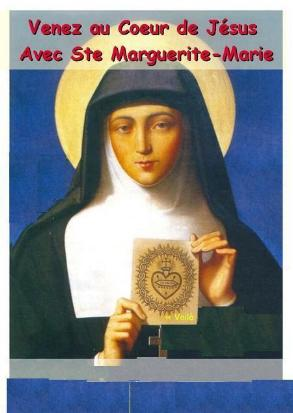
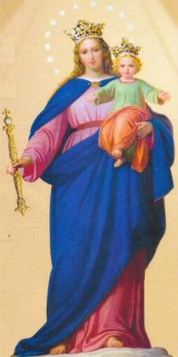
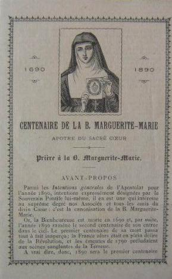
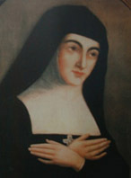

A nova Madre do Mosteiro,
Irmã Marie Christine Melin, sempre foi admiradora das virtudes da Serva de 
Porém, para uma alma toda humilde como era a de nossa Santa, ser revestida de um cargo que incluía algumas pequenas honras, era um grande sofrimento íntimo. Como compensação por ocupar um cargo honroso aos olhos das criaturas, Irmã Margarida Maria gostava de se aplicar em todos os pequenos serviços da casa, indo se oferecer as suas Irmãs da cozinha, tanto para lhes ajudar a transportar a lenha, como para lavar as louças e outros trabalhos.
O Retiro espiritual de 1684 foi um notável acontecimento na sua vida de união com DEUS. O Soberano Mestre lhe preparou diretamente, pois ELE se comunicava com ela sempre de modo disponível e atencioso. Algumas palavras seráo suficientes para provar. Ela escreveu na sua Autobiografia: "No primeiro dia, ELE me apresentou o Seu SAGRADO CORAÇÃO como se fosse uma fornalha ardente, onde eu me sentia lançada e de inicio introduzida e inflamada pelo seu vivo ardor, que me parecia reduzir a cinzas. Estas palavras me foram ditas":
"Eis o Divino Purgatório de Meu Amor, onde você purificará o tempo de sua vida, pois EU vou fazê-la encontrar uma morada de luz, depois da união e da transformação".
A Santa se expressou assim: "Eu fui colocada numa mansão de glória e de luz, e eu, insignificante nada, estava repleta de tantos favores, que uma hora daquele prazer indescritível é suficiente para recompensar todos os tormentos dos mártires".
Margarida escreveu ainda sobre o sopro do ESPÍRITO SANTO, numa passagem admirável:
"ELE abraçou a minha alma num excesso de Sua Divina Caridade, mas de um modo maravilhosamente inexplicável, mudando o meu coração por uma chama de fogo devorante de Seu Puro Amor, a fim de que fossem consumidas em mim, todas as predileções e afetos terrestres que se aproximassem, me fazendo entender que, estava totalmente destinada a prestar uma continua homenagem ao SANTÍSSIMO SACRAMENTO. Eu devia me imolar continuamente por amor a adoração, me aniquilando e me ocultando de conformidade com a vida que o SENHOR tem na SAGRADA EUCARISTIA".
Ela tomou por modelo JESUS escondido na Adorável Hóstia Consagrada em todas as suas ações e principalmente na pratica dos três votos de religiosa. "Como eu ia a Santa Comunhão, ELE me fez compreender que ia imprimir em meu coração a santa vida de Graças que está na Eucaristia, vida oculta e aniquilada aos olhos da humanidade, vida de sacrifício, mas vida de amor eterno, que me daria em vista de fazer de mim aquilo que ELE desejava".
Foi durante aquele mesmo Retiro Espiritual que a SANTÍSSIMA VIRGEM MARIA lhe apareceu, segurando o seu querido MENINO JESUS. NOSSA SENHORA O colocou nos braços de Margarida, dizendo: "Eis AQUELE que veio lhe ensinar aquilo que deseja de você". Pressionada por um desejo extremo de acariciar o DIVINO MENINO, "eu O acariciei o tanto que quis", escreveu ela ingenuamente, "e depois, estando cansada e não capaz de acariciá-LO mais, ELE me disse": - "Agora você está satisfeita? Guarde esta lembrança para sempre, pois EU quero que você fique em MEU poder. Como viu que lhe permiti que ME acariciasse espero sua concordáncia para que EU lhe acaricie ou que lhe atormente do mesmo modo. Você não deverá ter outros movimentos além daqueles que EU lhe darei".
No fim do ano 1684, a Irmã que estava como Mestra das Noviças caiu perigosamente doente. Pensaram em substituí-la. A Madre Melin não tinha, sem dúvida, muito a refletir para fixar sua escolha na Serva de DEUS, Irmã Margarida Maria, a fim de que, pelo seu exemplo, as Noviças pudessem aprender a fazer progressos na perfeição do estado religioso, que elas abraçaram.
Por conseguinte, havia agora na Comunidade Religiosa uma grande corrente de veneração a Irmã Margarida e consequentemente aquela corrente arrastava as almas para o SAGRADO CORAÇÃO DE JESUS.

Várias Irmãs que passaram pela Mestra Irmã Margarida pronunciaram os seus votos. Apareceu também uma angélica criança, que se desabrochou junto de Margarida Maria. Era a Irmã Marie Nicole de La Faige dás Claines, que recebeu o hábito religioso no dia 12 de Maio de 1686. "Margarida a chamava carinhosamente de seu pequeno Luis Gonzaga, em homenagem ao Santo, por seu fervor espiritual e sua imensa modástia".
As suas noviças pareciam tão felizes, admiradoras dos bens espirituais, da habilidade de penetração nas almas e das virtudes de sua Mestra, que o fervor crescia de modo notável.
Era necessário ler os Avisos que a Mestra das Noviças dava a suas jovens almas, para compreender o gênero de espiritualidade de nossa Santa. Ela tinha verdadeiramente uma Doutrina, a qual ensinava depois que ela mesma a praticava. É a mais pura vida religiosa: a grande e verdadeira Doutrina, aquela que nasceu do Amor de DEUS e que se nutria de sacrifício, de abnegação e humildade, para se perder naquele Amor Soberano do SENHOR.
Ela disse sem rodeios as suas discípulas: "as almas negligentes e covardes não eram próprias para serem religiosas. Porque a vida do claustro era de luta, de um perseverante combate que propiciava uma grande firmeza para vencer as tentações e os obstáculos que surgem no cotidiano".
Também as almas do Purgatório não foram esquecidas. Rezar em benefício delas, sempre foi uma devoção muito querida a nossa Santa. Para estimular a Devoção, ela levou suas Noviças ao cemitério, lhes fazendo recitar uma quantidade de preces para as almas dos falecidos. À noite ela disse ao seu pequeno grupo: "Vocês só poderão, minhas queridas Irmãs, alcançar um prazer maior e mais sensível do que as homenagens prestadas ao DIVINO CORAÇÃO, se vocês se consagrarem a ELE. Isto é primordial para que sejam felizes, pois ELE quer servir de vocês para dar início a esta Devoção! Assim, é necessário continuar a rezar a fim de que ELE reine em todos os corações.
A Madre Melin acreditando nas intrigas de "algumas Irmãs", retirou da Serva de DEUS a Comunhão na primeira sexta-feira de cada mês, que ela fazia por ordem de seu Divino Mestre. Margarida se sentiu totalmente infeliz com a proibição, mas obedeceu e permaneceu em silêncio. Contudo, logo na primeira oportunidade que surgiu, provou que aquela Comunhão era a Vontade de JESUS.
O fato ocorreu assim: Aconteceu que a Irmã Franãoise Rosélie Verchète ficou tão perigosamente doente, que em poucos dias já se temia por sua vida. Como Margarida rezava pela cura de sua Noviça, NOSSO SENHOR lhe fez conhecer que aquela Irmã sofreria até que alguém lhe levasse a Comunhão Eucarística exatamente na primeira sexta-feira do próximo mês. A resposta do SENHOR deixou Margarida pensativa em face da ordem proibitiva de sua Superiora. O que fazer? Sentindo-se incapaz de decidir e atender a ordem de NOSSO SENHOR, ela foi pedir um conselho exatamente a Madre Melin, que ela sabia, era contra a nova Devoção ao SAGRADO CORAÇÃO DE JESUS. Entretanto, a Superiora era também conhecida pelos seus julgamentos justos e corretos e também, pelo seu perfeito equilíbrio emocional.
NOSSO SENHOR mandou Margarida escrever o seguinte bilhete para a Madre Melin: "Diz a sua Superiora que ela ME fez um grande desprazer, para agradar a algumas criaturas. Ela não teve receios de ME desgostar, cerceando a comunhão que EU tinha ordenado para ser feita na primeira sexta-feira de cada mês".
TRIUNFO DO SAGRADO CORAÇÃO NA COMUNIDADE DE PARAY
Margarida foi ao encontro da
Superiora Madre Melin e lhe entregou o bilhete ditado por JESUS. Lendo-o ela não
hesitou em autorizar a comunhão, desde que a Mestra das Noviças pedisse ao
SENHOR a 
A veneração das Noviças por sua Mestra foi aumentando a cada dia, especialmente depois de um caso como este, que se tornou público, sendo bastante comentado fora do Mosteiro, revelando a santidade daquela amiga do SENHOR.
Pouco depois, em 1684, o livro "Retiro Espiritual" escrito pelo falecido Reverendo Padre da Colombière entrou em circulação. E foi motivo de alegria nas boas almas da Visitação de Paray, quando ele começou a ser lido no refeitório das Irmãs.
E não houve qualquer equívoco, tudo foi relatado pelo Padre com simplicidade e plena realidade. Ele afirma diretamente que no Mosteiro existia uma pessoa a qual DEUS, "se comunicou confidencialmente", proporcionando-lhe uma visão admirável diante do SANTÍSSIMO SACRAMENTO "no oitavo dia após a Festa do CORPO DE CRISTO" . O livro descreve minuciosamente os pedidos precisos que o SAGRADO CORAÇÃO DE JESUS fez a aquela alma, os quais, por obediência, ela lhe transmitiu com absoluta humildade, porque ele era o seu Diretor Espiritual. Também as predições anunciadas pelo SENHOR as quais ela lhe antecipou e que se realizaram todas, é qualquer coisa de sobrenatural e de Divino que aconteceu. O Padre revela: "Esta pessoa, esta alma magnífica, é a Irmã Margarida Maria Alacoque. Ela não é uma cabeça doente ou uma iluminada, ela é verdadeiramente uma escolhida do SENHOR"!
O Padre da Colombière divulgou, no seu livro, todos os acontecimentos sobrenaturais, de modo simples e direto. Que revelação notável e inesperada! Evidentemente, já era uma Providência da Vontade do SENHOR!
Como consequência, as Noviças se portavam com um ardor cada vez maior no cultivo da Devoção ao Adorável CORAÇÃO DE JESUS. Na Comunidade, algumas almas as invejavam e por isso, sucumbia por vezes a doce tentação de ir juntar-se a felicidade delas."Elas se uniam com as outras para pedirem a DEUS o estabelecimento da Devoção ao Seu SAGRADO CORAÇÃO".
A Comunidade de Semur, graças à imediata impulsão dada pela Madre Greyfié, com a leitura do "Retiro Espiritual" do Padre da Colombière, tudo foi orientado em benefício do CORAÇÃO DIVINO DE JESUS. Uma pessoa foi contratada para fazer um painel, e, no começo de Janeiro de 1686, a Madre Péronne Rosélie enviou o desenho em miniatura a sua querida filha, com uma dázia de pequenas imagens "para fazer presentes" as Noviças e aquelas que se juntassem a elas.
Margarida continuando a educar as Noviças dizia: "Tudo ao SENHOR, tudo para Deus, minhas boas crianças, carregue a cruz alegremente e com coragem, porque de outro modo, vocês terão que prestar contas bem rigorosas na eternidade".

Quinta-feira, 20 de Junho, o último dia da oitava do Santíssimo Sacramento, a Irmã dás Escures veio pedir a nossa Santa uma miniatura do SAGRADO CORAÇÃO, que a Madre Greyfié lhe tinha enviado, dizendo que ela queria fazer um pequeno altar no coro, para convidar as Irmãs a esta Devoção. Irmã Margarida ficou encantada com a idáia, mas escondeu a sua surpresa, se contentando em rezar para que o empreendimento tivesse êxito. Ela sabia que Deus tem a sua hora e ela esperou e alcanãou.
No dia seguinte, sexta-feira, era o dia designado pelo próprio NOSSO SENHOR para a festa que ELE queria em honra de Seu CORAÇÃO DIVINO. Irmã dás Escures que foi transformada pela graça de DEUS, ergueu diante do portão do coro um pequeno altar formado de uma única cadeira, "onde ela colocou um tapete apropriado". A miniatura estava numa moldura dourada, rodeada por flores. A imagem do CORAÇÃO DE JESUS foi o primeiro objeto que atingiu todos os olhares, à medida que as Irmãs entravam. "Alguém se aproximou e cheia de surpresa ali permaneceu admirando, enquanto as religiosas leram um bilhete, escrito a mão pela Irmã dás Escures, convidando todas as esposas do SENHOR a vir render suas homenagens ao Seu Adorável CORAÇÃO".
A Irmã Maria Madalena que tinha sido a primeira no movimento de oposição dentro do Mosteiro contra a Irmã Margarida, agora queria ser também a primeira no movimento da adoração. Num momento, tudo mudou a face do Mosteiro. Havia mais que um coração e que uma alma, porque o CORAÇÃO DE JESUS era aclamado. No mesmo dia, alguém projetou fazer um painel representando a imagem do DIVINO CORAÇÃO, e todos aqueles que pensando poder obter "alguma coisa para favorecer espiritualmente os seus parentes" , se comprometeram a contribuir, para o êxito geral do empreendimento. "Para a consolidação da Obra do SENHOR", é necessário colaborar, diziam todas aquelas almas direitas, "que se admiravam da mudança tão rápida e tão notável, acontecida no Mosteiro". Elas acrescentavam: "DEUS é verdadeiramente o Mestre dos corações" e puderam verificar legitimamente "aquilo que nossa venerável Irmã Margarida dizia: o CORAÇÃO DE JESUS reinará malgrado a interferência de seus inimigos".
A Madre Melin, inspirada pelo ESPÍRITO SANTO, foi despertada para a necessidade de construir uma Capela em honra do SAGRADO CORAÇÃO DE JESUS, antes de providenciar a pintura de um painel com o motivo da manifestação sobrenatural. As Irmãs do Pequeno Hábito imediatamente ficaram entusiasmadas com a idáia e "intercederam junto a seus pais e amigos conseguindo algum dinheiro para a mencionada construção".
A Irmã Marie Lazare Dusson, que tanto amava a Irmã Margarida, naquela manhã teve uma grande alegria, porque junto com a Irmã dás Escures nos seus secretos preparativos, cultivaram o jardim do Mosteiro com tão perseverante ardor, que vendendo as flores conseguiram num curto prazo, uma soma considerável, para contribuir na santa empresa.
A noite de 21 de Junho de 1686, não estava muitão longe do Te Deum que ia traduzir a alegria que brotava em todos os corações. Irmã Margarida Maria foi dizer as suas Noviças: "Eu não tenho mais nada a desejar" , confessou ela, "eu não desejo mais nada, uma vez que o SAGRADO CORAÇÃO é conhecido, e ELE começa a reinar nos corações. Certifiquem-se, minhas queridas Irmãs, que ELE também reina para sempre em vocês, como Soberano SENHOR e ESPOSO".
Ela escreveu para o Mosteiro de Dijon, onde, ao lado da Madre de Saumaise, o SAGRADO CORAÇÃO criou uma nova apóstola, na pessoa da Irmã Jeanne Madeleine Joly, que foi a primeira a escrever um pequeno livro sobre a Devoção ao SAGRADO CORAÇÃO. Em 4 de Julho de 1686, ela escreveu à Madre Louise-Henriette de Soudeilles em Moulins, e lhe falou entusiasticamente sobre a devoção ao SAGRADO CORAÇÃO DE NOSSO SENHOR JESUS CRISTO, dizendo que sempre acontece "grandes benefícios e mudanças em todos aqueles que se consagram e se dedicam com fervor a ELE".
Em 15 de Setembro, ela escreveu novamente a Madre de Soudeilles e lhe enviou o livro escrito pelo Padre da Colombière e duas imagens do SAGRADO CORAÇÃO, com um coração maior, para ser colocado logo abaixo de um crucifixo ou em outro lugar para ser honrado, e um menor, para guardá-lo, pois tinha um pequeno texto de uma consagração ao SAGRADO CORAÇÃO. Sua alma transbordava de alegria ao falar sobre o Adorável CORAÇÃO DE JESUS.
No dia 31 Outubro 1686 nossa Santa apresentou ao Padre Rolin, seu Diretor Espiritual o projeto do "Voto de Perfeição" que ela queria fazer. Irmã Margarida Maria Alacoque estava tranquila, muito feliz e plenamente segura de fazer com aquele Voto, a vontade de NOSSO SENHOR. Por essa razão, assumindo o "Voto de Perfeição", que foi aprovado pelo seu Diretor Espiritual e por sua Superiora, ela realizava um sonho interior de buscar a sua perfeição, para ser digna e merecer estar na presença de seu DEUS.